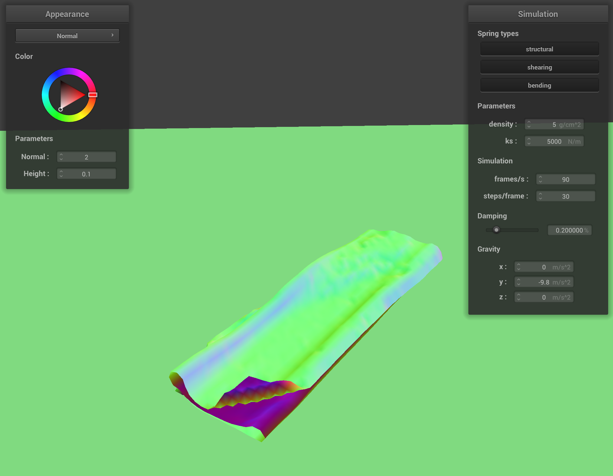
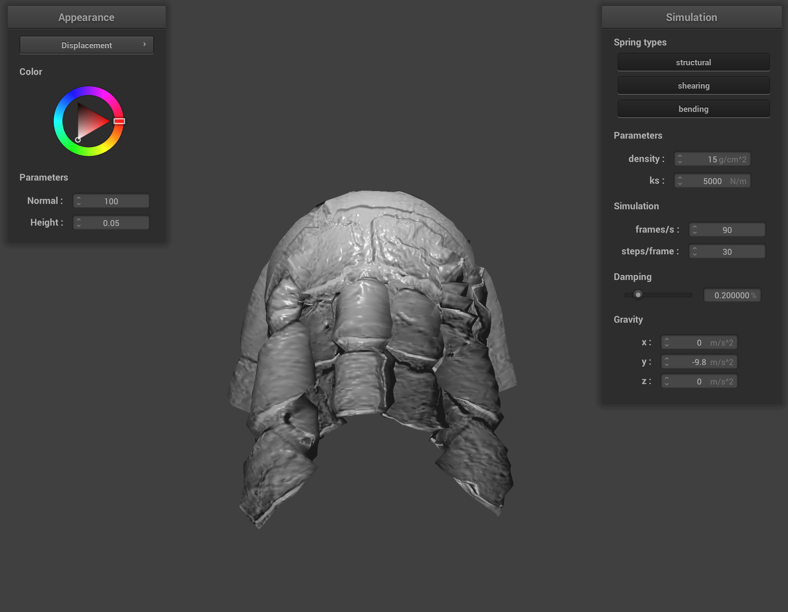

Overview
For this project, I started by implementing a basic wireframe to set up all the grid points containing a mass and
spring in my fabric object. This was done by creating a uniform grid with masses at each grid
location and additionally creating structural, shearing, and bending forces between point masses.
After creating the basic masses and springs infrastructure, I implemented simulated movement by calculating
all the forces that acted upon a point/mass, from external forces to spring forces. All of these forces were
used to calculate the updated position of each point mass particle at each timestep using the Verlet integration
equations to create realistic updates of each point mass according to the forces calculated. From there, I further
augmented the simulation model by adding collision simulations with other objects. To do this, I readjusted the location
of pointmasses as they reached the boundary of an object and fixed the point mass position to be outside of the
surface boundary to ensure that a realistic rendering of collisions was possible. I thought this was the coolest part
of the project because it was one of the fewest lines of code to implement just to detect the tangent point and create
the correction vector but it made really cool and realistic looking results when the cloth hit a surface. Along with
implementing collisions with other objects, I also implemented self-collision to prevent the cloth from falling into itself
in strange ways by hashing objects into a square to optimize collision checks and perform corrections to prevent the
cloth from overlapping with itself. Finally, in the last part of the project, I worked on creating different cool
surface textures by using GLSL shaders!
Part I: Masses and springs
Screenshots:
|
No shear
|
Only shear
|
All springs
|
Part 2: Simulation via numerical integration
Parameter Experimentation:
- A small spring constant causes the cloth to appear very stretchy and elastic. As the cloth falls,
there are many light ripples and the cloth ends in a very straight position with very tiny and shallow
creases, due to the small spring constant's ability to allow the cloth to stretch on its own due to gravity
without creating large creases in the cloth structure. On the other hand, a very large spring constant
causes the cloth to appear very stiff, and as it falls, the cloth appears to try and maintain it's straight/flat
shape for as long as possible before finally allowing a couple creases to appear in its final resting state.
The creases are quite large for a mid-range/default spring constant, but for much larger ones, the strong
spring constant prevents very large or prominent creases due to the strong force between point masses
that forces points to maintain a relative straight vertical position, although it still has some large, shallow creases that appear
quite stiff.
|
Spring Constant 50
|
Spring Constant 5000 (default)
|
Spring Constant 500000
|
- A small density seems to make the cloth ripple less as it is falling and the top of the cloth stays
mostly smooth for most of the fall and only gets wrinkled at the end when the cloth
nears its final resting state. On the other hand, a large density causes the top of the cloth to jerk and ripple a lot more while it
is falling; and even in its final resting state, there are noticeably a lot more and deeper creases around the top
of the cloth as it appears as it appears to be weighed down heavier. The most prominent difference among
the different densities can be seen below where we see that a lower density causes less drooping/creasing in the
top of the cloth as it hangs while a higher density causes the cloth to be weighed down more at each point mass
resulting in greater creasing/folding in the top cloth points.
|
Density 5
|
Density 15 (default)
|
Density 50
|
-
A small damping value causes the cloth to fall very quickly and sway a lot more violently back and forth
before reaching its final resting position. When the damping value is increased on the other hand, the
speed that it falls is much slower and it pretty much just appears to gradually float down in slow-mo to
its final resting position without much rocking back and forth or bouncing.
Part 3: Handling collisions with other objects
Shaded Cloth on Sphere:
|
Spring Constant 500
|
Spring Constant 5000
|
Spring Constant 50000
|
Looking at the results, we can see that increasing the spring constant creates more stiffness in the
cloth structure and makes the draping cloth less attached to the sphere surface. In the case of ks 500,
we can see that the cloth very smoothly sticks to the top half surface of the cube with very small and straight
draped wrinkles hanging down. For the ks 5000 case, the cloth has a little bit of crease structure that is going
outward at the halfway horizontal midpoint of the sphere and this is more obviously visible when ks increases to
50000. In particular, we can also see that with less cloth sticking directly to the surface of the cube, there is
also less vertical draping cloth, with most of the edges resting slightly higher and at an angle instead of
directly draping down. The creases are also larger as well for higher ks since the higher spring constant
prevents the cloth from being as fluid and elastic and counteracts the gravitational force that tries to make it fold inward/downward.
Shaded Cloth on Plane:
 Shaded cloth on plane at rest
Shaded cloth on plane at rest
|
Part 4: Handling self-collisions
Cloth falling images:
|
Initial fall
|
Middle of fall
|
Final resting state
|
Varying density:
|
Density 5 - Initial fall
|
Density 5 - Middle of fall
|

Density 5 - Fully fallen
|
|
Density 50 - Initial fall
|
Density 50 - Middle of fall
|
Density 50 - Fully fallen
|
With a higher density, we can see in the beginning and middle states that the cloth appears much more wrinkled during
the fall and exhibits a lot more creases once it has fully fallen. (Note that the last images are not the final resting state
at convergence, but just the position of the cloth once it no longer has a vertical component). Due to the higher density,
the cloth falls more directly downward which causes it to pile more heavily on itself in the bottom row and cause
greater creases, while the top row with a lower density has visibly fewer creases (even compared to the original
in the above section) due to the relatively lighter density of the cloth that allows it to fall more smoothly.
Varying Spring constant:
|
Ks 500 - Initial fall
|
Ks 500 - Middle of fall
|
Ks 500 - Fully fallen
|
|
Ks 50000 - Initial fall
|
Ks 50000 - Middle of fall
|
Ks 50000 - Fully fallen
|
In these images, we can see that for the case of a small spring constant, the cloth is much more elastic and
prone to any vibration movements as the cloth bends on hitting the plane. The surface of the cloth has many
ripples and creases due to the low spring constant that causes the cloth to move and bend more easily at every point.
On the other hand, with a high spring constant, the cloth is not as elastic and movable between neighboring points so the
level of creasing and folding as the cloth hits the plane is much less mercurial and a lot more uniform and pronounced,
because any bending that occurs must happen in large uniform areas due to the high spring constant that prevents
excessive bending or stretching between direct neighboring points.
Part 5: Shaders
Shader programs: A shader program works by linking two separate shader files (a vertex shader and a
fragment shader) to create an output shaded image. The vertex file takes in the raw per-vertex properties and performs
the necessary transformations to map these vertices into 3D drawing coordinates in screen space (in this case, using
the u_model transformation matrix). (Additionally, it also tells the GPU which pixel this information corresponds
to in order to know which pixel is being renderized.) These resulting transformed coordinates and vectors are outputted
from the vertex shader and passed into a linked fragment shader. Since the fragment shader is only responsible for
figuring out the appropriate rendering and color of each pixel, any fragment shader can be linked to the same vertex shader
as long as the inputs/outputs match (that is, the fragment shader must take as inputs the variables that are outputted
by the vertex shader). The fragment shaders are responsible for creating the textures or colors that are interpolated
onto the coordinates and are then rendered onto the gl_Position variable dictated by the vertex shader.
Blinn Phong: The Blinn-Phong shading model uses the same vertex file for mapping out the object vertex locations
but for lighting, it combines the normal diffuse shading with ambient and specular shading to create a more realistic
3D glossy effect. The ambient shading contains only a dark constant illuminated color (hence just a constant ka = 0.1 multiplied
by a vector of all 1's to give a constant 0.1 lighting to the object). On top of that, the diffuse lighting provides
general uniform shading that is independent of the light direction so we receive a very dull smooth look that displays
a general broad lighted and shaded region based on the light source and shadows. Finally, we add specular lighting which creates
the glossy touch that adds the bright mirror reflection of light that occurs when the viewing angle is close to the
mirror of the light angle. All three separate lightings and the final Blinn Phong image are shown below:
Texture: Here are objects with my own texture (image of Santorini!) overlayed on each object.
Bump and Displacement Mapping: brick texture
|
Bump mapping Ball
|
Bump mapping Cloth
|
|
Displacement mapping Ball
|
Displacement mapping Cloth
|
Comparison: Looking at the two methods, we can see that they take two different approaches
to providing texture to the objects. In the bump mapping, we only change the rendering of the image so the
actual vertex points of the sphere and cloth maintain the same shape. As a result, we still see a sphere and
a cloth that are perfectly smooth but they just appear with a rendered brick pattern on them (ie. it looks like
they've been painted with a brick pattern). For displacement mapping on the other hand, we have physically
moved the vertex positions of the objects so the surface bumpiness also reflects the brick texture with bumps and
crevices where the bricks are pieced together. We can clearly see in the bottom row of pictures that the vertices
have moved along with the texture so we no longer have a smooth-surfaced sphere or cloth but rather a
brick-surfaced sphere and cloth.
Bump and Displacement Mapping Coarseness 16:
|
Bump mapping Ball (coarseness 16)
|
Bump mapping Cloth (coarseness 16)
|
|
Displacement mapping Ball (coarseness 16)
|
Displacement mapping Cloth (coarseness 16)
|
Bump and Displacement Mapping Coarseness 128:
|
Bump mapping Ball (coarseness 128)
|
Bump mapping Cloth (coarseness 128)
|
 Displacement mapping Ball (coarseness 128)
Displacement mapping Ball (coarseness 128)
|

Displacement mapping Cloth (coarseness 128)
|
Comparison: For the bump image, since there is no 3D texture on the objects themselves, there is not
a noticeable difference between the two different coarseness levels. (I am really squinting very hard and I
cannot see a difference between the two.) For the displacement images, however, there is an obvious distinction
between the two coarseness levels in the effect of the 3D jaggedness of the objecs. For a low coarseness of 16,
we can see that the sphere exhibits very broad corners that are not particularly sharp and mostly obtuse convex angles.
Similarly, the cloth at coarseness 16 is relatively round and, while bulging oddly in some areas due to the displacement
mixed with extra coarseness guarantees to prevent sharp edges, it is not significantly different from the original
default picture in the previous section. For a high coarseness of 128, we can see that both objects become a lot
bumpier and spikier. The sphere in particular has a much rounder shape but the textured 3D surface itself appears
to contain thousands of very small spikes on the surface. The size of the texture-displaced surface
vertices have a more extreme variation to create the very coarse and spiked structure but overall, viewed from a
distance, they average together to form a much nicer sphere shape compared to the coarseness of 16 which looks more like
a compound dodecahedron rather than a sphere. Looking closely at the cloth at coarseness 128, we can also see
more inconsistencies in the surface of its texture. Zooming into the very top of the cloth where it smoothly rests on the
sphere, we can see small bumps where there shouldn't be any (in the middle of the brick surface) that are a result of the
extremely high coarseness adding further texture to the cloth shape.
Mirror surfaces: